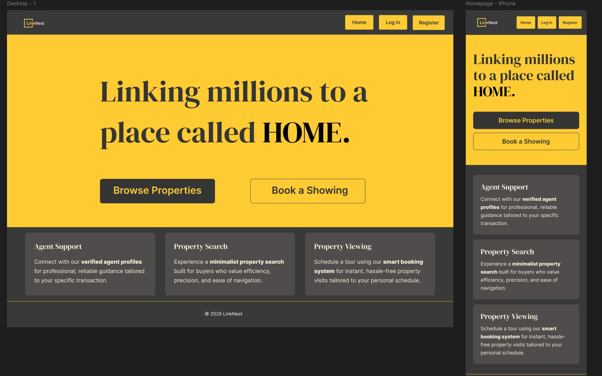
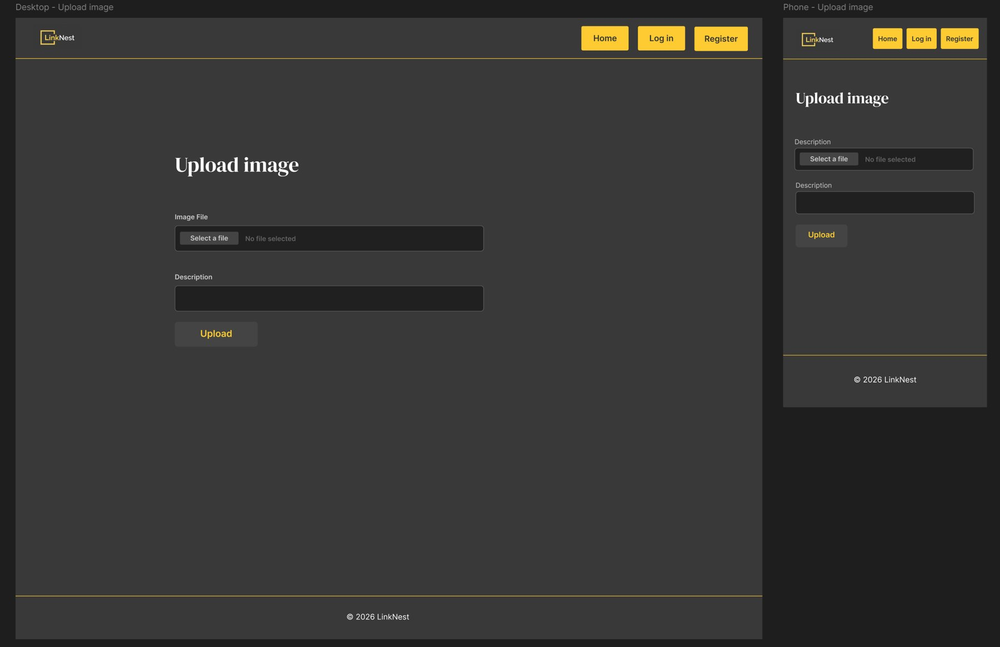
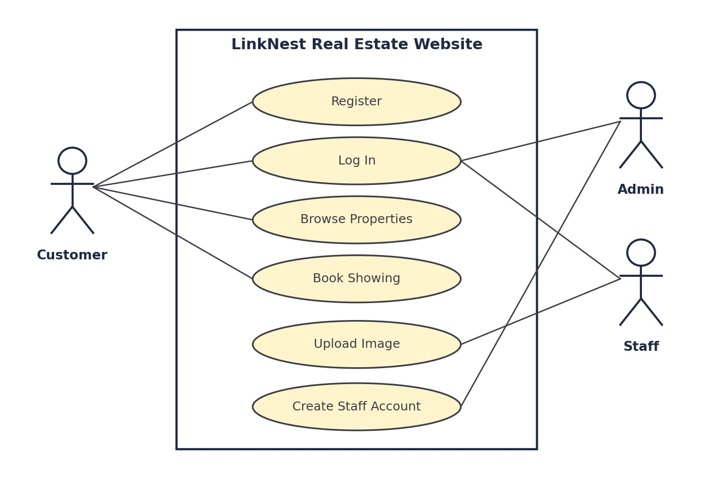
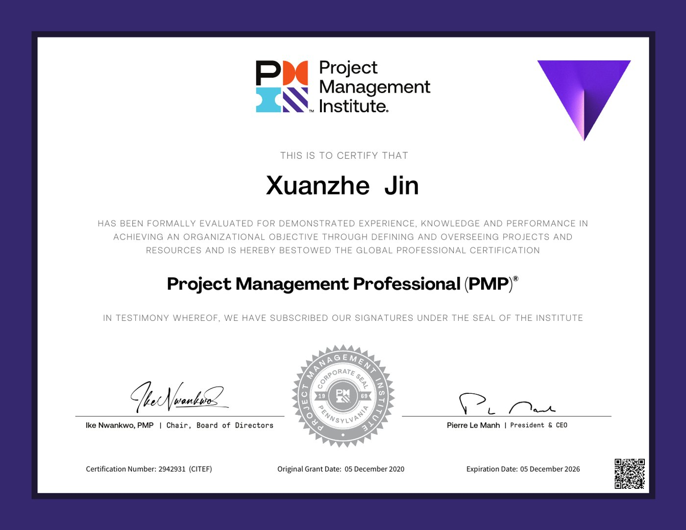

I build web applications, and I plan the work like a project manager.
I am a final-year Information Technology (Software Development) student at NBCC with a full-stack foundation in C#/.NET, Java, JavaScript, HTML/CSS and SQL. Before moving into development, I spent more than three years managing catalogs and digital tools at adidas, and I earned my PMP certification in 2020.
I turn business needs into use cases, user stories and wireframes, then build and test them. I work in English, Mandarin and Korean, and I am looking for a software development internship or practicum placement.
UML class diagrams, use cases, user stories, wireframes
Ways of working
Agile / Scrum, project management (PMP)
Projects
LinkNest Real Estate Website
Server-Side Web: MVC course project, 2026 · Real estate · Team of two · In progress
A real estate website built with ASP.NET Core MVC for a client. Customers can register, log in, browse properties and book showings. Staff can upload images, and admins can create staff accounts. Every page fits on one screen and has a phone version.
Tools: ASP.NET Core MVC, C#, .NET, Visual Studio, Git and GitHub
So far: team profile memo, use cases, user stories, and final designs for the home and Upload Image pages (see design samples below).
Mini Rogue Console Game
NBCC academic project · Games
A team project to design and build a console-based rogue-like game, planned with UML class diagrams. I implemented the core game logic using object-oriented principles.
Tools: C#, .NET, Git, UML
Outcome: a playable application, delivered on schedule.
Catalogs and digital tools at adidas
Professional experience, 2022 to 2025 · Retail and trade marketing
Created trade marketing catalogs, coordinated with Business Units to keep product release data current, maintained the team’s digital tools, and resolved execution issues during cross-functional rollouts.
Outcome: better data accessibility and operational efficiency for the team, and project timelines met.
Design samples from LinkNest
Course work from the LinkNest project. It contains no confidential client or employer information.

Final home page design, desktop and iPhone.

Final Upload Image page design, desktop and phone.

Use case diagram: three roles and the six main functions of the site.Use case narrative: Upload Image
Actor
Staff
Precondition
The staff member is logged in through the staff login.
Main flow
1. The staff member selects Upload Image. 2. The system displays the Upload Image page. 3. The staff member chooses an image file, adds a description and selects Upload. 4. The system checks the file. 5. The system saves the image and shows a confirmation message.
Alternative flow
If the file is not valid, the system shows an error message and the staff member can choose another file.
Postcondition
The image is saved and available in the system.
User stories
As a…
I want to…
So that…
Customer
register an account
I can book showings
Customer
log in to the website
I can access my account
Customer
browse available properties
I can find homes that interest me
Customer
book a showing for a property
I can view it in person
Staff member
log in through the staff login
I can use the staff tools
Staff member
upload an image
images are available on the website
Admin
create staff accounts
staff can access the staff tools
Visitor
use the website on my phone
I can use it anywhere
Experience and education
September 2025 to present
Diploma in Information Technology: Software Development
New Brunswick Community College (NBCC), Moncton
Applying core programming principles in software engineering projects and hands-on labs.
January 2022 to June 2025
Catalog and Digital Tool Project Manager
adidas
Trade marketing catalogs, product release data, digital tools and cross-functional rollouts.
2009 to 2013
Bachelor of Arts in Advertising
Changchun University of Science and Technology, China
Certification and volunteering
Project Management Professional (PMP)®, Project Management Institute. Granted December 2020.
Legs for Literacy, Moncton (October 2025). Directed runners and kept the course safe at a fast-paced community event.

PMP certificate.
What a colleague says
“Working with Xuanzhe at adidas was a great experience. He brought a high level of professionalism and responsibility to our team. He has a great talent for keeping cross-functional projects moving smoothly and is very agile when it comes to solving problems on the spot. Any team would be lucky to have him.”
Contact
I am looking for a software development internship or practicum placement. Email me, or find me on LinkedIn and GitHub.